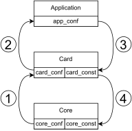

Configuration files and parameters¶
This chapter describes the NDK configuration files and parameters. The configuration has three levels: the CORE, the card, and the user application. A detailed description of each level is below (the abreviated version is provided via the following link).
Build system files¶
The following table provides an overview of files used for building a project/design.
Note
Path build/card reduced to build, ndk/core/intel reduced to core, ndk/cards/vendor/dev reduced to card.
The placeholder {TOOL} refers to the tool-specific filename, for example: Vivado, Quartus.
File |
Group |
Description |
|---|---|---|
build/app_conf.tcl |
Configuration |
user configuration of a project for a specific card |
build/{TOOL}.tcl |
Build |
TCL entry point |
build/Makefile |
Makefile |
entry point for make to build a project for a specific card; some parameters can be specified here |
card/config/card_conf.tcl |
Configuration |
user-configurable parameters for the card |
card/config/card_const.tcl |
Configuration |
parameters for the core, constant for the card |
card/src/Modules.tcl |
Build |
IP cores and card-specific modules |
card/src/{TOOL}.inc.tcl |
Build |
configuration of the synthesis tool and constraints |
card/src/card.mk |
Makefile |
environment variables passed to TCL |
core/config/core_conf.tcl |
Configuration |
user-configurable parameters for the core |
core/config/core_const.tcl |
Configuration |
constant parameters for the core (checks, etc.) |
core/config/core_bootstrap.tcl |
Configuration |
the main configuration script, loads of all config files |
core/config/core_func.tcl |
Configuration |
helper procedures used in _conf.tcl (e.g. ParsePcieConf) |
core/Modules.tcl |
Build |
Top-level components and modules common for all designs (TSU, DMA, etc.) |
core/{TOOL}.inc.tcl |
Build |
minimalistic, sources common.inc.tcl |
core/common.inc.tcl |
Build |
generates DT + vhdl pkg, sets ARCHGRP for Modules.tcl |
core/core.mk |
Makefile |
minimalistic |
Parametrizing NDK-CORE design¶
The files in the <NDK-CORE_root_directory>/intel/config directory and the
<NDK-CORE_root_directory>/intel/core.mk file contain CORE parameters. Some
of these parameters are configurable (more info below). The sourcing of
configuration parameter files has its own hierarchy, which is shown in the
Hierarchy diagram. This section describes the
configuration files used in the case of NDK-CORE design. For the description of
the application and card-specific configuration, see following sections on this page.
{kind=link}

Hierarchy diagram¶
Numbers show the order in which these parameter files are sourced. Sourcing takes place in the core_boostrap.tcl file.
File description¶
core_conf.tcl¶
This file provides a listing of all parameters that can be changed by the user. Each parameter contains a comment with allowed values and the meaning of these values. Because the NDK-CORE design is independent of the underlying platform (e.g. card type) there are many allowed combinations of parameters. However, the user can find many combinations of parameters that are unsupported and may cause errors during the synthesis/implementation process. The user can add other configuration parameters to this file according to their need.
core_const.tcl¶
Warning
This file contains parameters that should not be changed deliberately by the user. They are for development purposes only.
The first purpose of this file is to pass the values of specific parameters to
the VHDL package which is included as a part of the FPGA design. Parameters
specified in the core_conf.tcl are visible in this file and so are the
parameters specific for the chosen card type. Passing TCL parameters to VHDL
constants is a specific use case described in the Adding constants to the VHDL package
section below.
The second purpose of this file is when the value of a parameter depends on the value of another NDK CORE constant. Conditionally assigned parameters that are for a specific card type should be located in a corresponding card_const.tcl file. An example of a conditional assignment follows:
set PCIE_LANES 16
# setting the number of PCIE_LANES to 8 when specific PCIe configuration is used
if {$PCIE_ENDPOINTS == 1 && $PCIE_ENDPOINT_MODE == 2} {
set PCIE_LANES 8
}
The third purpose of this file is to implement statements that check compatible combinations of parameters. When an incompatible combination is detected, the TCL shell will raise an error and stop the compilation process. You should implement these checks only for the parameters used in the NDK-CORE.
core.mk¶
This file contains default values for the parameters specified in the Makefile. The allowed values of each parameter are provided in the comments. The user of the design can change these values freely.
core_bootstrap.tcl¶
Warning
The features in this file are for development and should not be changed.
This file loads all necessary path variables from the environment. Then are
sourced all configuration files described in the Hierarchy diagram. The
files with the lowest priority are sourced first and the ones with the highest
priority last. The core_const.tcl file has the highest priority.
Further work with parameters¶
Warning
These features are for development and should not be used in regular application use.
Developing a new design often requires working with configuration parameters during compilation/synthesis of the VHDL source files. For this purpose, there are two mechanisms provided for passing the parameters specified in the TCL shell to affect the final VHDL design.
Passing through Modules.tcl¶
As described in the Build System section, the Modules.tcl files allow for modular and hierarchical organization of VHDL source files. The Modules.tcl files provide an ARCHGRP list to pass specific constants across the source file hierarchy. Each Modules.tcl file obtains such a list from its parent Modules.tcl file. It allows further adjustments of the ARCHGRP list(s) of its descendant(s).
The parameters specified in the NDK-CORE repository are passed using the
CORE_ARCHGRP associative array. The array is initialized in the
<NDK-CORE_root_directory>/intel/common.inc.tcl file. Parameters are specified in
the core_conf.tcl and core_const.tcl files. This means that the configuration
parameters of a chosen card are visible in this file and can be added to the
array. The associative array was chosen for clarity purposes. Because the
ARCHGRP is declared as a simple list, the associative array is converted to it
and added to the FPGA entity. As the ARCHGRP list is passed through
the hierarchy, it is converted back
to the associative array when a specific array value is needed. An example is shown in the
<NDK-CORE_root_directory>/intel/Modules.tcl file.
Adding constants to the VHDL package¶
A dynamic VHDL package is generated each time a user starts
building a new design. The package is called combo_user_const and
contains all parameters which were added in the core_const.tcl file described
previously. The values are passed to the VHDL package with specific types using
TCL procedures in the VhdlPkgGen.tcl script. This script can be found in the build folder
in the OFM repository (Build System). Examples of some procedures are
provided in the following code block:
# passing TCL parameters
VhdlPkgString FANCY_STRING $FANCY_STRING
VhdlPkgInt SOME_INTEGER $SOME_INTEGER
VhdlPkgBool SOME_BOOLEAN $SOME_BOOLEAN
# passing specific values
VhdlPkgBool IMPORTANT_BOOLEAN true
VhdlPkgHexVector LARGE_VECTOR 64 ABCDEF0123456789
Note
It is recommended to pass TCL parameters to the VHDL package with the same name.
Parametrizing a specific card type¶
The final design of the NDK application depends on the underlying platform, e.g., the card type on which the design should run. The system provides mechanism to configure card specific parameters.
File description¶
The file structure is similar to the one described in the configuration of the NDK-CORE design.
card_conf.tcl¶
This file lists user-configurable parameters and their possible values in the
comments. The file contains parameters relevant to a specific card. Those
parameters are mostly tied to the underlying hardware, like the number of Ethernet
ports or the PCIe generation of the used PCIe core. The purpose of this file is the
same as that of the core_conf.tcl file in the NDK-CORE repository. The only
difference is that it has a higher priority.
card_const.tcl¶
Warning
This file contains features for development. It is not recommended for the user to change the parameters in this file.
To ensure that the values of the configuration parameters are valid and compatible with the values of other parameters, they need to be checked. And that is done here, making this file similar to the core_const.tcl. The only difference is that the checking considers only the used card. For example, if the given card supports two QSFP transceivers at most, the corresponding parameter should be set to either 1 or 2.
It is also possible to add a constant for a specific card to the VHDL package. This package is also included in the fpga.vhd top-level component (this component is card-specific too).
The third way is to add conditionally assigned parameters, which is the same way they are used in the core_const.tcl file.
card.mk¶
Warning
This file contains features for development. It is not recommended for the user to change the parameters in this file.
This part of the Makefile sources all environment variables used during the initial stage of the build process. The majority of the variables contain paths to various locations from which the design is sourced/built. There are also build-specific variables that further parametrize the design. The purpose of these is described in the build/<card_name>/Makefile section.
Further work with parameters¶
Warning
These features are for development and should not be used in regular application use.
Passing the parameter values to other parts of the design or build system is very similar to the case of NDK-CORE.
Passing through Modules.tcl¶
The card-specific parameters are passed to the Modules.tcl file of the top-level
entity using the CARD_ARCHGRP associative array. This array is initialized in
the <card_root_directory>/src/Vivado.inc.tcl file for Xilinx-based cards and
in <card_root_directory>/src/Quartus.inc.tcl for Intel-based cards. The
CARD_ARCHGRP array is concatenated with CORE_ARCHGRP so the top-level
Modules.tcl file shares parameters of them both. The parameters specified
in the core_conf.tcl, core_const.tcl,
card_conf.tcl, card_const.tcl and also build/<card_name>/app_conf.tcl.
are visible in the *.inc.tcl files and can be added to the array.
Adding constants to the VHDL package¶
It is recommended to add card-specific constants to the combo_user_const VHDL
package in card_const.tcl file. The way of adding these constants was described in
the Adding constants to the VHDL package section in the documentation of NDK-CORE
configuration.
Parametrizing the user application¶
The user application can also be parametrized using specific configuration
files. Configuration parameters can be handed to the subcomponents of the
APPLICATION_CORE design entity. It also allows the user to choose one of,
sometimes, multiple configurations for a specific card before launching the
build process.
Configuration files¶
The configuration of the application is less constrained than NDK-CORE and card configuration. The application repository provides three files in which the user application is or can be configured.
build/<card_name>/Makefile¶
Warning
This file contains features for development. It is not recommended for the user to change the parameters in this file.
This is the top-level file that launches the building of the design. The configuration(s) given in this file depend on the card type and they allow to build the design with different parameters, for example, when there are multiple Ethernet configurations. For more information about the modes of each card, visit the “Build instructions” section provided in the documentation for each of the card types.
The configuration parameters are handed as environment variables which are
converted into TCL variables. These are used in the *_const.tcl* and
*_conf.tcl files throughout the design. There are more Makefile configuration
parameters in use than just Ethernet configuration. They are declared in the
core.mk and can be changed when issuing the make command.
The example of this goes as follows:
# default build configuration
make DMA_TYPE=4
# choosing to build specific Ethernet configuration
make 100g4 DMA_TYPE=3
build/<card_name>/{Vivado,Quartus}.tcl¶
This file adds the APPLICATION_CORE architecture where a logic of a
user application is. The APP_ARCHGRP associative array is
initialized in this file and allows the user to pass one or more user-specified
parameter(s) to Modules.tcl files of the APPLICATION_CORE and its underlying
components. All configuration parameters in the Hierarchy diagram
are visible here and can be added to the array as well.
build/<card_name>/app_conf.tcl¶
This file has the highest priority of all user-configurable constants (for more details, refer to the Hierarchy diagram). The user can change the parameters specified in this file or add others according to their needs. Adding a parameter to the VHDL package is also possible because the combo_user_const is also included in the APPLICATION_CORE entity.
TL;DR¶
This section contains specific recipes for achieving specific goals.
I need to include specific component in CORE depending on a given parameter value¶
First, you should write your parameter to the
core/intel/config/core_conf.tclwith a specific value (if the parameter stays only in thecore/intel/config/core_conf.tcl) or with a default value (if the parameter will be set in other configuration files).Then add this parameter to the CORE_ARCHGRP array in the
core/intel/common.inc.tclfile.
set CORE_ARCHGRP(DMA_TYPE) $DMA_TYPE
set CORE_ARCHGRP(APPLICATION_CORE_ENTITY_ONLY) false
# adding two custom parameters
set CODE_ARCHGRP(MY_PARAM_1) $MY_PARAM_1
set CODE_ARCHGRP(MY_PARAM_2) $MY_PARAM_2
Note
The name of the constant added to the array should be the same as the name of
the parameter, thus set CORE_ARCHGRP(MY_PARAM) $MY_PARAM.
The build system then converts the array to a list which is propagated as
ARCHGRPthrough theModules.tclfile of thefpga.vhdcomponent to theModules.tclof thefpga_common.vhd.
Note
Notice that the fpga.vhd component is dependent on a specific card but already contains
all propagated parameters of the CORE design.
The
ARCHGRPcan be propagated to other subcomponents when added as the third element of a subcomponent list. This is shown in the following snippet.
lappend COMPONENTS [list "<entity_name_1>" "<path_to_entity_1>" $ARCHGRP]
# "FULL" is the default value for the ARCHGRP field
lappend COMPONENTS [list "<entity_name_2>" "<path_to_entity_2>" "FULL" ]
When a constant from the
ARCHGRPis needed, the list has to be converted back to an array:
array set ARCHGRP_ARR $ARCHGRP
The values from the
ARCHGRP_ARRcan then be accessed in a similar way in which they were added to the array.
if { $ARCHGRP_ARR(MY_PARAM_1) == 3 } {
# do one thing
} elseif { $ARCHGRP_ARR(MY_PARAM_1) == 4 } {
# do other thing
}
What can I do with the core_conf.tcl file¶
You can declare new configuration parameters (and assign their default values) so they would be visible across all supported cards. These default values can be overwritten in the card_conf.tcl file of each card.
Write allowed values of parameters to the commentary above each declaration. Especially when new configuration parameter or parameter value is added.
What can I do with the core_const.tcl file¶
You can add a dependent parameter (the value of such a parameter depends on the value of another parameter). The developer should add CORE-specific parameters only. (Those are the ones that are common across all supported cards.)
if {$PCIE_ENDPOINTS == 1 && $PCIE_ENDPOINT_MODE == 2} {
set MY_PARAM_2 8
} else {
set MY_PARAM_2 16
}
You can check combinations of different parameters. This allows you to avoid various incompatibilities which may (or may not) crash the synthesis. An unsuccessful check stops the compilation process.
if { $MY_PARAM_1 != 3 && $MY_PARAM_1 != 4 } {
error "Unsupported value of MY_PARAM_1: $MY_PARAM_1!"
}
You can add a parameter value to the generated VHDL package, which is then icluded in the fpga.vhd and fpga_common.vhd components:
VhdlPkgInt PCIE_GEN $PCIE_GEN
VhdlPkgInt DMA_TYPE $DMA_TYPE
VhdlPkgBool DMA_RX_BLOCKING_MODE $DMA_RX_BLOCKING_MODE
VhdlPkgInt MY_PARAM_1 $MY_PARAM_1
What can I do with the card_conf.tcl file¶
You can change parameters specified in the core_conf.tcl file for a specific card type (because some parameters are directly dependent on an underlying hardware), e.g., the number of Ethernet ports or Ethernet channels.
What can I do with the card_const.tcl file¶
You can add a dependent parameter when a card requiers it. CORE specific parameters belong to the core_const.tcl.
You can check the parameter values to see if they adhere to the selected card.
You can add a parameter to the VHDL package which will be used in the card’s fpga.vhd top-level component.
What can I do with the app_conf.tcl file¶
You can add parameters for the given application (component application_core.vhd).
You can change parameters specified in the core_conf.tcl and card_conf.tcl files with respect to the application.
You can add a parameter to the VHDL package, which is used in the application_core.vhd component (the same package as in the card_const.tcl and core_const.tcl).